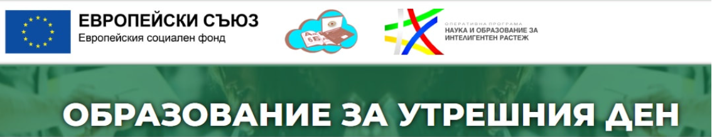

Профилирана гимназия "Пейо Крачолов Яворов", гр. Петрич

Проектът се финансира по Оперативна програма „Наука и образование за
интелигентен растеж“, съфинансирана от Европейския социален фонд.
Продължителността на проекта е 36 месеца - от 15.10.2019 г. до
15.10.2022 г.